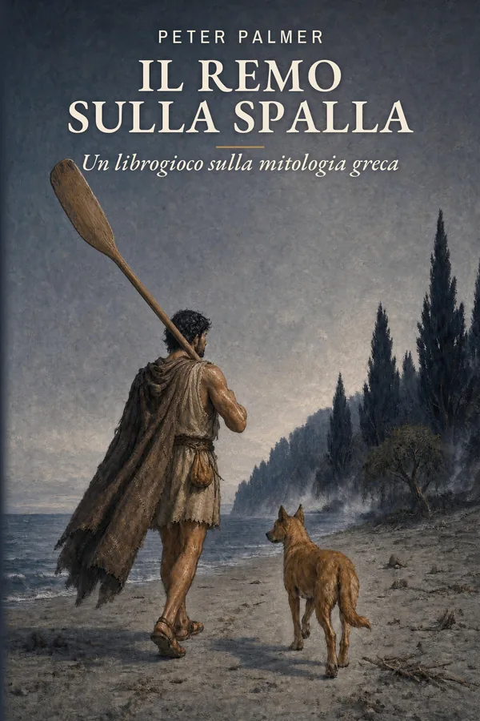

Mitologia greca · dai 10 anni
Il remo sulla spalla
Un librogioco sulla mitologia greca
La notte in cui alla nave si spezza l'albero, stringi il tuo remo e aspetti l'onda. Ti svegli su una spiaggia grigia, sotto un cielo che non riconosci. Accanto a te c'è soltanto un cane fulvo, giovane, che sembra sapere dove andare. E chi incontri, prima o poi, vuole sapere il tuo nome.
Ti chiami Anfialo. Sei figlio di Euriloco e nipote di Odisseo, e la tua famiglia ha un conto aperto con il mare. Per chiuderlo dovrai scegliere a ogni passo quale strada prendere, di chi fidarti, quando combattere e quando scappare, che cosa rispondere a chi ti mette alla prova.
C'è una sola strada che arriva fino in fondo.
Dove comprarlo